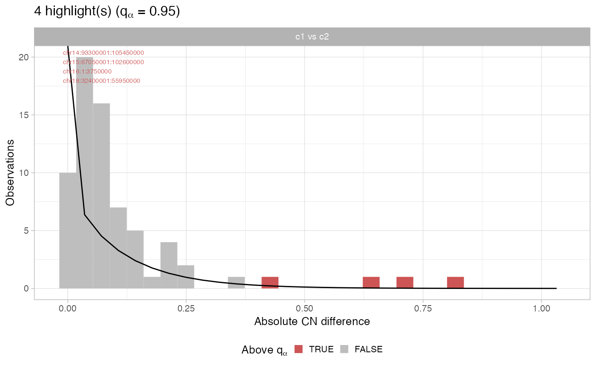
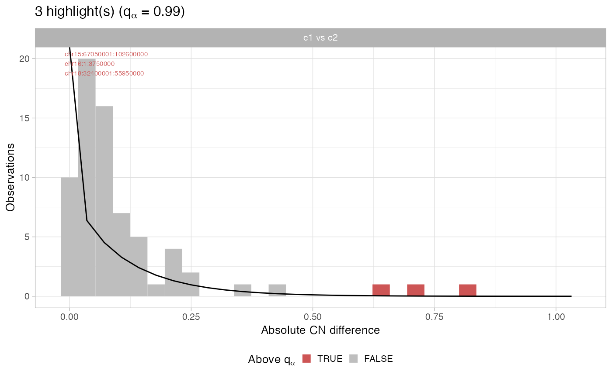

plot_highlights(x, alpha = 0.05)
Arguments
Value
Examples
x = Rcongas::congas_example
print(x)
#> ── [ Rcongas ] ────────────────────────────────────────────────────────────────
#>
#> → Data: 503 cells with 8564 genes, aggregated in 70 segments.
#>
#> ℹ Clusters: k = 2, model with AIC = 577427.35.
#>
#> ● Cluster c1, n = 379 [75.35% of total cells].
#> ● Cluster c2, n = 124 [24.65% of total cells].
#>
#> ── CNA highlights (alpha = 0.05)
#>
#> ✓ c1 CNA(s): [chr14:93300001:105450000] vs c2, [chr15:67050001:102600000] vs c2, [chr16:1:3750000] vs c2, and [chr18:32400001:55950000] vs c2
#>
#>
#> ── Differential Expression DESeq2 (1 vs 2)
#> ✓ 212 DE genes (alpha = 0.01, |lfc| > 0.25).
# Default view
plot_highlights(x)

# More stringent
plot_highlights(x, alpha = 0.01)

# Even more stringent
plot_highlights(x, alpha = 0.001)